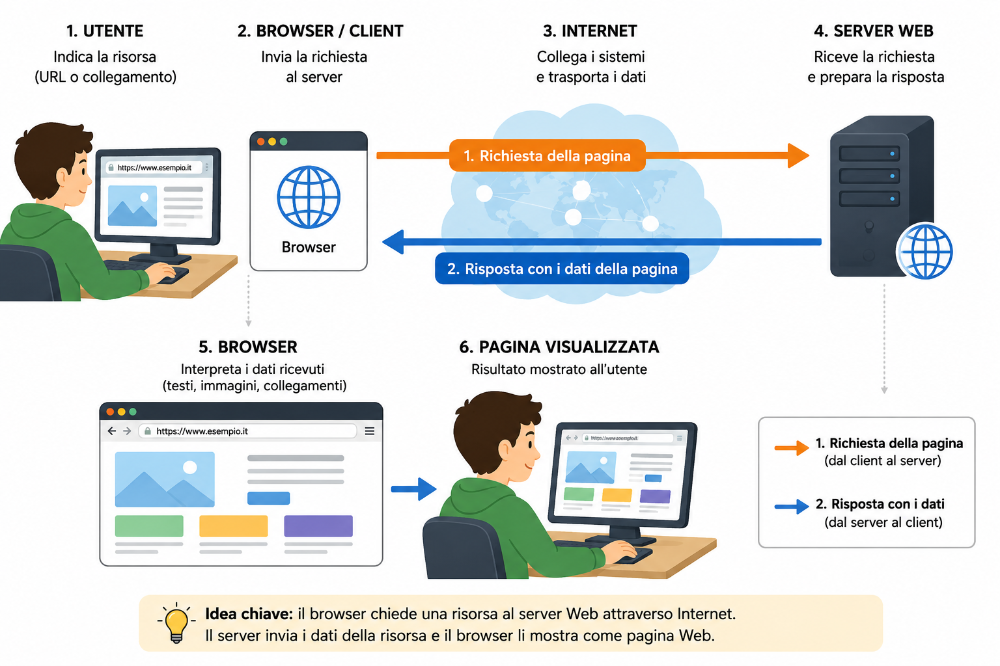

Prima di iniziare: richiamiamo la Lezione 10
Una LAN collega dispositivi in un'area limitata e può funzionare anche senza Internet. Il router collega reti differenti; client e server sono ruoli: il client richiede una risorsa, il server la mette a disposizione.
Collegando una rete locale ad altre reti possiamo raggiungere un'infrastruttura molto più estesa e utilizzare servizi differenti. Avevamo già anticipato che Internet e Web non sono sinonimi.
Azioni simili, servizi differenti
Uno studente apre una pagina del corso, invia un messaggio di posta elettronica, partecipa a una videochiamata e salva un documento in uno spazio online. In tutti i casi usa Internet, ma non compie sempre un'attività del Web.
Obiettivi della lezione
Internet: una rete di reti
Grande infrastruttura globale formata dall'interconnessione di moltissime reti, dispositivi e sistemi distribuiti nel mondo.
Internet non è un singolo computer, un singolo servizio o un luogo fisico. Permette a sistemi lontani di comunicare e rende disponibili servizi diversi. I dettagli tecnici del suo funzionamento non sono necessari per comprendere il modello introduttivo di questa lezione.
I servizi che utilizzano Internet
Internet sostiene attività differenti: consultare pagine Web, usare la posta elettronica, inviare messaggi, partecipare a videochiamate, archiviare e condividere file nel cloud, seguire contenuti in streaming oppure usare giochi e altri servizi online.
| Servizio | Usa Internet? | Fa parte del Web? |
|---|---|---|
| Consultazione di pagine Web | Sì | Sì |
| Posta elettronica | Sì | Non necessariamente |
| Messaggistica | Sì | Non necessariamente |
| Videochiamata | Sì | Non necessariamente |
| Streaming | Sì | Può essere offerto attraverso il Web |
Attività: aggiungi alla tabella archiviazione cloud e gioco online. Motiva a voce perché usano Internet e perché non basta il nome dell'attività per stabilire che coincidano con il Web.
Il World Wide Web
Servizio di Internet formato da pagine e risorse collegate tra loro, consultabili attraverso un browser.
Pagina Web
Singola pagina consultabile che può contenere testo, immagini, audio, video e collegamenti.
Sito Web
Insieme organizzato di pagine e risorse Web collegate.
Collegamento ipertestuale
Elemento selezionabile che porta a un'altra pagina, a una risorsa o a un punto specifico del contenuto.
In sintesi: sito Web = insieme organizzato di pagine e risorse; pagina Web = singola pagina consultabile.
Browser e motore di ricerca
Browser
Programma usato per richiedere, interpretare e consultare pagine e risorse Web. Chrome, Firefox, Edge e Safari sono esempi di browser.
Motore di ricerca
Servizio Web che aiuta a trovare pagine e contenuti partendo da parole o frasi. Google, Bing e DuckDuckGo sono esempi.
Indirizzo Web e URL
Indirizzo che identifica una risorsa Web e indica come raggiungerla.
Consideriamo l'indirizzo di esempio:
https://www.esempio.it/scuola/lezione
https://
Modalità o protocollo usato per accedere alla risorsa.
www.esempio.it
Nome del dominio che identifica il sito.
/scuola/lezione
Percorso della risorsa all'interno del sito.
Per questa lezione è sufficiente riconoscere le tre parti. Non occorre approfondire il funzionamento tecnico che permette di raggiungere il server.
Dal browser alla pagina Web
Riprendiamo i ruoli client e server. In questo caso il browser agisce come client e richiede una risorsa a un server Web.
- Indica la risorsa.
L'utente inserisce un URL o seleziona un collegamento.
- Invia la richiesta.
Il browser richiede la risorsa.
- Attraversa Internet.
La richiesta raggiunge il server Web.
- Riceve la richiesta.
Il server Web individua la risorsa richiesta.
- Invia la risposta.
Il server restituisce i dati della risorsa.
- Mostra la pagina.
Il browser interpreta i dati e presenta la pagina all'utente.

Il server non invia “tutto Internet”: risponde alla richiesta inviando la risorsa necessaria. Il browser non contiene tutte le pagine; le richiede e le presenta quando servono.
Errori frequenti da correggere
“Internet e Web sono sinonimi”
No. Internet è la rete globale; il Web è uno dei servizi che la usa.
“Il Wi-Fi è Internet”
No. Il Wi-Fi è una tecnologia per collegarsi senza cavo a una rete.
“Google è Internet”
No. Google Search è un motore di ricerca , cioè un servizio Web. Internet è l’infrastruttura globale che permette di raggiungerlo.
“Browser e motore di ricerca sono la stessa cosa”
No. Il browser è un programma; il motore di ricerca è un servizio Web.
“Chrome è un motore di ricerca”
No. Chrome è un browser.
“Un sito Web è sempre formato da una sola pagina”
No. Un sito può organizzare molte pagine e risorse.
“Scrivere una ricerca e scrivere un URL sono la stessa operazione”
No. L'URL indica una risorsa; una ricerca usa parole o frasi per trovare contenuti.
“La posta elettronica fa necessariamente parte del Web”
No. Usa Internet, ma non coincide necessariamente con il servizio Web.
“Il browser contiene tutte le pagine che visualizza”
No. Richiede le risorse ai server e le presenta all'utente.
“Il server Web invia sempre l'intero Internet al computer”
No. Invia i dati necessari per la risorsa richiesta.
💻 Laboratorio guidato — Esplora browser, URL e pagine
Obiettivo: distinguere indirizzo e ricerca, riconoscere gli elementi di una pagina e usare le funzioni essenziali del browser senza account e senza inserire dati personali.
- Apri il browser.
Individua la barra degli indirizzi e i controlli principali.
- Seleziona la barra.
Premi Ctrl + L.
- Inserisci un indirizzo completo.
Usa l'indirizzo Web fornito dal docente.
- Osserva l'URL.
Individua il dominio e l'eventuale percorso.
- Apri una nuova scheda.
Premi Ctrl + T.
- Esegui una ricerca.
Usa una frase in un motore di ricerca indicato dal docente.
- Confronta.
Spiega la differenza tra l'URL completo e la frase usata nella ricerca.
- Usa i controlli.
Prova indietro, avanti e aggiorna senza modificare altre impostazioni.
- Osserva una pagina.
Individua titolo, collegamento e almeno un contenuto multimediale.
- Chiudi la scheda.
Premi Ctrl + W.
-
Completa la scheda.
Termini osservati durante il laboratorio Termine Esempio osservato Funzione Browser ________________ ________________ Motore di ricerca ________________ ________________ Sito Web ________________ ________________ Pagina Web ________________ ________________ Servizio Internet ________________ ________________ - Esponi a voce.
In circa due minuti racconta che cosa accade dalla scrittura dell'indirizzo alla comparsa della pagina.
Esercizi progressivi
1. Classifica i servizi
Classifica Web, e-mail, videochiamata, streaming e messaggistica: usano Internet? Coincidono necessariamente con il Web?
2. Associa
Associa Internet, Web, browser, motore di ricerca, sito e pagina alle definizioni studiate.
3. Completa
Internet è una rete globale di ______; il Web è un ______ di Internet; il browser è un ______.
4. Leggi l'URL
In https://www.esempio.it/scuola/lezione individua modalità, dominio e percorso.
5. Confronta
Spiega due differenze tra browser e motore di ricerca e fornisci un esempio per ciascuno.
6. Riordina
Ordina: il server invia la risorsa; l'utente indica l'URL; il browser mostra la pagina; il browser invia la richiesta; il server riceve la richiesta.
7. Motiva
“Una videochiamata usa Internet, quindi è sempre una pagina Web”. Spiega perché la conclusione non è corretta.
8. Esposizione orale
In tre minuti distingui Internet, Web, sito, pagina, browser e motore di ricerca.
Controlla le frasi e l'URL
Internet è una rete globale di reti; il Web è un servizio di Internet; il browser è un programma. Nell'URL, https:// indica la modalità, www.esempio.it il dominio e /scuola/lezione il percorso.
Controlla l'ordine della richiesta
L'utente indica l'URL; il browser invia la richiesta; il server la riceve; il server invia la risorsa; il browser mostra la pagina.
🧠 Autoverifica
Rispondi prima a voce. Apri la soluzione soltanto dopo.
1. Che cos'è Internet?
È una grande infrastruttura globale formata dall'interconnessione di moltissime reti.
2. Perché Internet e Web non sono sinonimi?
Internet è la rete globale; il Web è uno dei servizi che la utilizza.
3. Quali servizi Internet non coincidono necessariamente con il Web?
Per esempio posta elettronica, messaggistica e videochiamate.
4. Qual è la differenza tra sito e pagina Web?
Il sito è un insieme organizzato di pagine e risorse; la pagina è una singola pagina consultabile.
5. Qual è la differenza tra browser e motore di ricerca?
Il browser è un programma per consultare il Web; il motore di ricerca è un servizio Web per trovare contenuti.
6. Che cos'è un URL?
È l'indirizzo di una risorsa Web e indica come raggiungerla.
7. Quali parti essenziali riconosci nell'URL di esempio?
La modalità https://, il dominio www.esempio.it e il percorso /scuola/lezione.
8. Che cosa accade dopo che il browser invia una richiesta?
La richiesta attraversa Internet, il server Web la riceve e invia la risorsa; il browser interpreta i dati e mostra la pagina.
9. Correggi: “Il browser contiene tutto Internet”.
Il browser richiede risorse ai server e le presenta; non contiene tutto Internet.
Glossario essenziale
- Internet
- Rete globale formata da moltissime reti interconnesse.
- Web
- Servizio Internet formato da pagine e risorse collegate.
- Servizio Internet
- Attività o funzione resa disponibile usando Internet.
- Browser
- Programma per richiedere e consultare pagine Web.
- Motore di ricerca
- Servizio Web che aiuta a trovare pagine e contenuti.
- Sito Web
- Insieme organizzato di pagine e risorse Web.
- Pagina Web
- Singola pagina consultabile attraverso il browser.
- Collegamento ipertestuale
- Elemento selezionabile che conduce a un'altra risorsa.
- URL
- Indirizzo di una risorsa Web.
- Dominio
- Nome che identifica un sito nell'indirizzo Web.
- Client
- Ruolo di chi richiede una risorsa.
- Server Web
- Sistema che mette a disposizione risorse Web.
Sintesi essenziale
🎒 Lo zaino dello studente
Le idee e i confronti da saper ricostruire durante un'esposizione orale.
✅ Cinque concetti essenziali
- Internet è una rete globale di reti interconnesse.
- Il Web è uno dei servizi che usa Internet.
- Il browser consulta il Web; il motore di ricerca trova contenuti.
- Un URL identifica una risorsa Web.
- Browser e server Web scambiano richiesta e risposta.
↔️ Tre confronti
- Internet ≠ Web
- browser ≠ motore di ricerca
- sito Web ≠ pagina Web
🔢 Una sequenza da raccontare
- L'utente indica un URL.
- Il browser invia la richiesta.
- Il server restituisce la risorsa.
- Il browser mostra la pagina.
🎤 Esposizione di 3 minuti
Definisci Internet e Web, confronta browser e motore di ricerca, leggi l'URL di esempio e racconta lo scambio browser-server.
Allenamento distribuito
Missione di ripasso · 10 minuti al giorno
Prova prima senza rileggere, poi controlla e correggi.
Classifica servizi Internet e attività del Web.
Distingui browser, motore di ricerca, sito e pagina.
Leggi e spiega le tre parti dell'URL di esempio.
Racconta a voce il percorso browser-server.